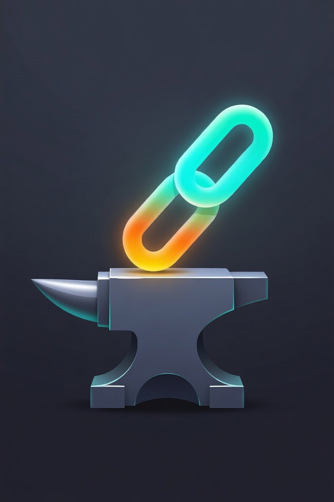
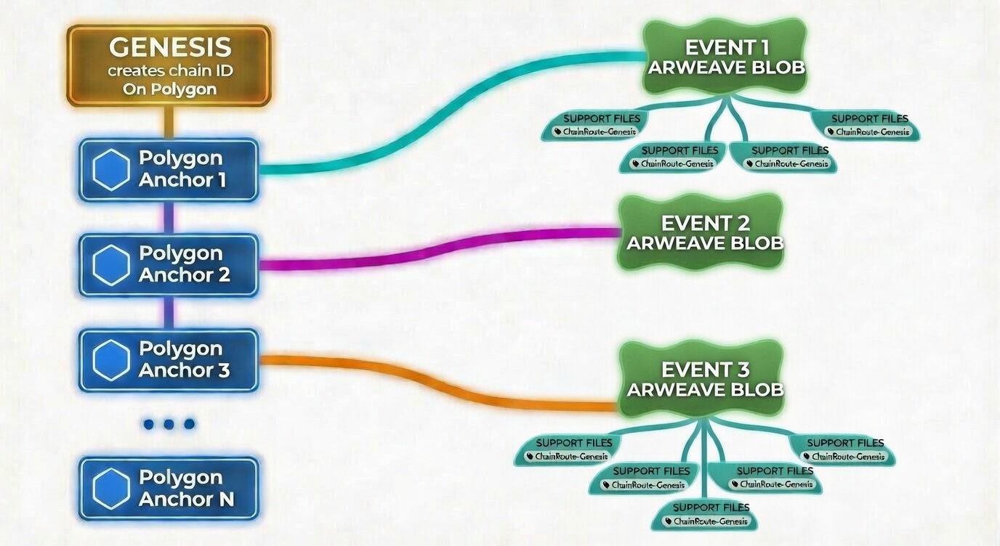
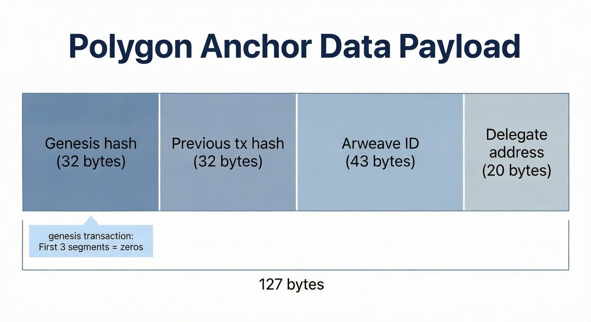

ChainRoute-Forge
Provenance for the real world. Beyond art—industry, resources, compliance, and trust.
ChainRoute is the protocol; ChainRoute-Forge is the web app to implement it.
ETHDenver 2026 Buidlathon
Why provenance matters
It's not just art and collectibles. Every sector needs a verifiable story.
- Industry & manufacturing — Where did this part come from? Which batch, which plant?
- Natural resources & extraction — Origin of minerals, timber, oil; ethical and environmental proof.
- High-end goods — Luxury cars, watches, fashion: authenticity and ownership history.
- Regulatory & contracts — Proving compliance, chain of custody, and meeting contractual obligations.
- Pharma, food, RWA — Supply chain integrity, safety, and audit trails.
Industry & manufacturing
Provenance answers: Which batch? Which plant? Which process?

Injection moulding machines. Source: Wikimedia Commons (CC BY-SA 4.0).
Traceability for parts, materials, and quality—for recalls, warranties, and B2B trust.
Natural resources & extraction
Origin, ethics, and environmental proof.

Greetwell quarry. Source: Geograph / Richard Croft (CC BY-SA 2.0).
Minerals, timber, oil & gas: verifiable chain from source to buyer for sustainability and regulation.
High-end goods: cars & watches
Authenticity and ownership history matter to buyers and insurers.

1938 Rolls-Royce Phantom III, Beaulieu. Source: Hugh Llewelyn / Wikimedia Commons (CC BY-SA 2.0).
Luxury cars, watches, and collectibles: one immutable chain from creation to current owner.
Regulatory compliance & contractual obligations
Provenance helps satisfy regulators and contract terms.

Seal and signature on document (1901). Source: Wikimedia Commons (Public Domain).
Chain of custody, audit trails, and proof of origin for compliance and dispute resolution.
Diverse applications
The ChainRoute protocol—one protocol, many sectors. ChainRoute-Forge is the web app to use it.
Regulators, buyers, and partners need proof. The ChainRoute protocol delivers it; ChainRoute-Forge is the user interface.
The problem
Today: scattered records, central control, or expensive custom systems.
- Paper and PDFs get lost, altered, or disputed.
- Tracing or auditing provenance is hugely costly and slow—months of work, legal fees, and manual chasing.
- Centralized platforms own your data and can change the rules.
- Building custom traceability is costly and often locked to one vendor.
We need permanent, verifiable, and open provenance—without smart contracts or new tokens. The ChainRoute protocol provides it; ChainRoute-Forge is the web app to use it.
ChainRoute Protocol
Supporting files and event blobs live on Arweave; Polygon anchors reference the blobs. All carry the Genesis ID except the genesis tx. (ChainRoute-Forge is the web app for implementing this protocol.)

ChainRoute Protocol
ChainRoute is the protocol. ChainRoute-Forge is a web app that lets users implement it—create chains, post blobs, anchor on Polygon, verify.
- In the protocol: for each event, photos, documents, etc. are supporting files posted to Arweave. The event blob (also on Arweave) lists them plus brief summary info—notes, GPS, and the like.
- Anchors on Polygon reference those Arweave blobs. Each anchor is signed by the responsible custodian or party of record and carries delegation for who signs the next anchor.
- Every anchor, blob, and supporting file (except the genesis transaction itself) includes the Genesis ID—one root for the whole chain.
- No smart contracts. No custom tokens. Anyone can verify from a single tx hash or QR code. ChainRoute-Forge gives you the interface; ChainRoute is the protocol.
For creators, manufacturers, regulators, and buyers.
The anchor: 127 bytes on Polygon
Signed by the custodian or party of record; includes delegation for the next signer. References the event blob on Arweave.

Genesis hash · Previous tx · Arweave blob ID · Delegate (next signer)
Permanent data on Arweave
Supporting files (photos, documents) are posted to Arweave. The event blob lists them and adds summary info (notes, GPS, etc.); it's also posted to Arweave. All include the Genesis ID.

Verify in seconds
In ChainRoute-Forge, paste a tx hash or scan a QR code to see the full chain and all linked data. The web app verifies against the ChainRoute protocol.

ChainRoute-Forge
The web app for the ChainRoute protocol. Provenance for industry, resources, compliance, and trust.
Forge unbreakable chains in minutes. AI helps; Polygon + Arweave anchor forever.
Try the ChainRoute-Forge web app
ETHDenver 2026 Buidlathon · ChainRoute protocol